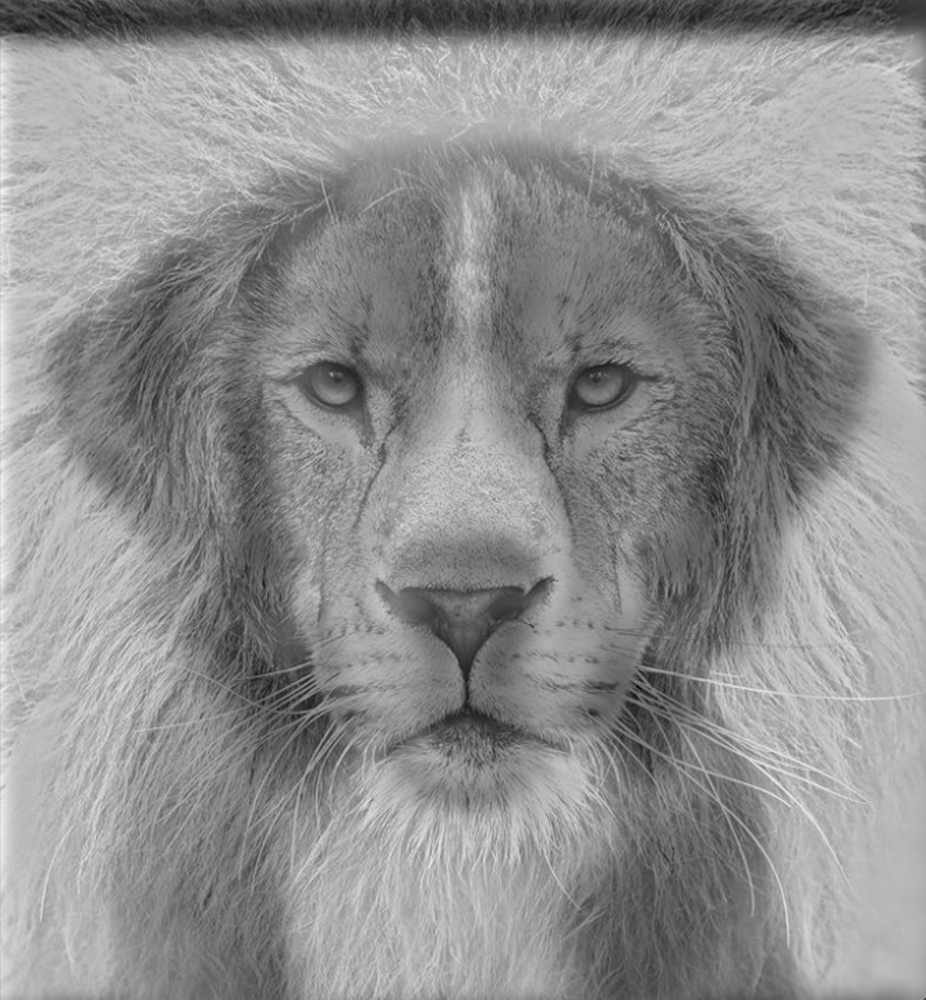
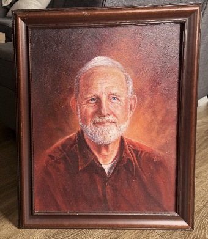
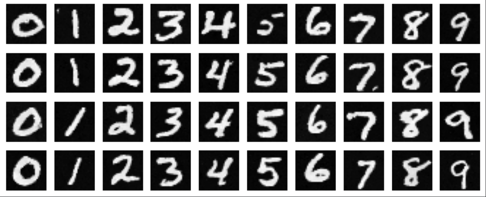

Project 0: Playing with my iPhone camera
A quick exploration in smartphone photography with zoom.

Project 1: Colorizing the Prokudin-Gorskii Collection
Using python to restore old images by aligning color channels.

Project 2: Utilizing Image Frequencies
Blending, sharpening, and creating hybrid images.

Project 3: Utilizing Homographies for Panoramas
Corner Detection, Stitching, and RANSAC for auto-mosaicing.

Project 4: Rendering 3D Scenes with NeRF
Building Neural Radiance Fields with MLPs.

Project 5: Diffusion Models & Flow Matching
Implementing diffusion loops and flow matching algorithms.